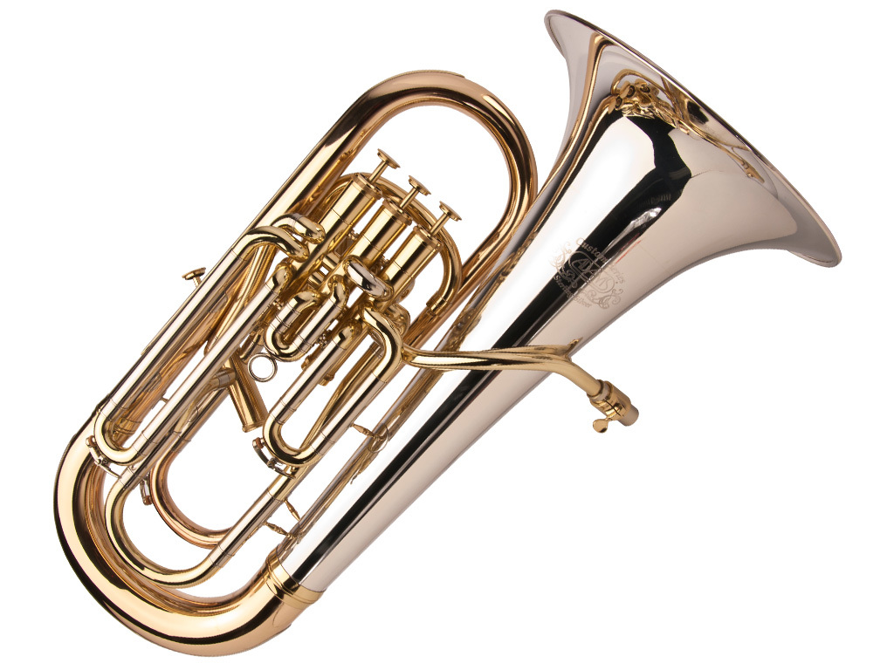
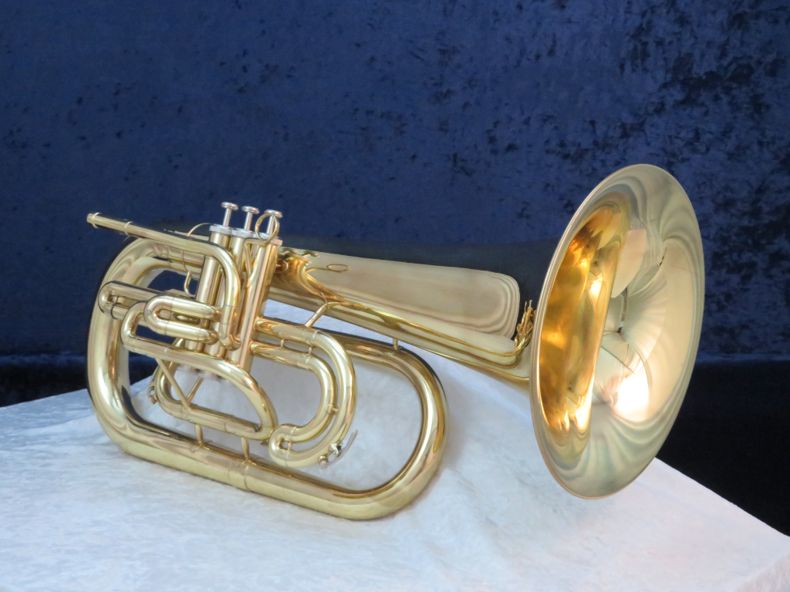

上低音號
上低音號是一種大型銅管樂器，音域介於小號和低音號之間。
它以其豐富的音色和強大的音量聞名，常用於管樂隊和交響樂團中，擔任中低音部分。
上低音號通常具有四個活塞，演奏者通過按下活塞並調整嘴唇來改變音高。
其溫暖而圓潤的音色使其在各種音樂風格中都能發揮重要作用，不僅能夠提供和聲支撐，還能在獨奏中展現出色的表現力。
圖片集


上低音號是一種大型銅管樂器，音域介於小號和低音號之間。
它以其豐富的音色和強大的音量聞名，常用於管樂隊和交響樂團中，擔任中低音部分。
上低音號通常具有四個活塞，演奏者通過按下活塞並調整嘴唇來改變音高。
其溫暖而圓潤的音色使其在各種音樂風格中都能發揮重要作用，不僅能夠提供和聲支撐，還能在獨奏中展現出色的表現力。